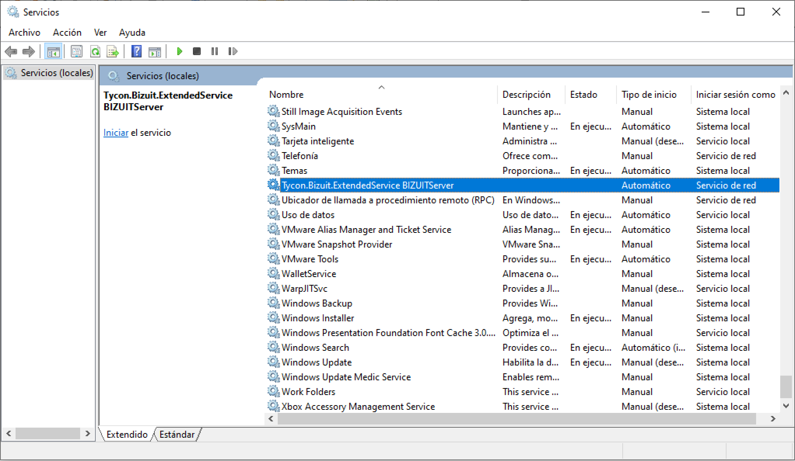
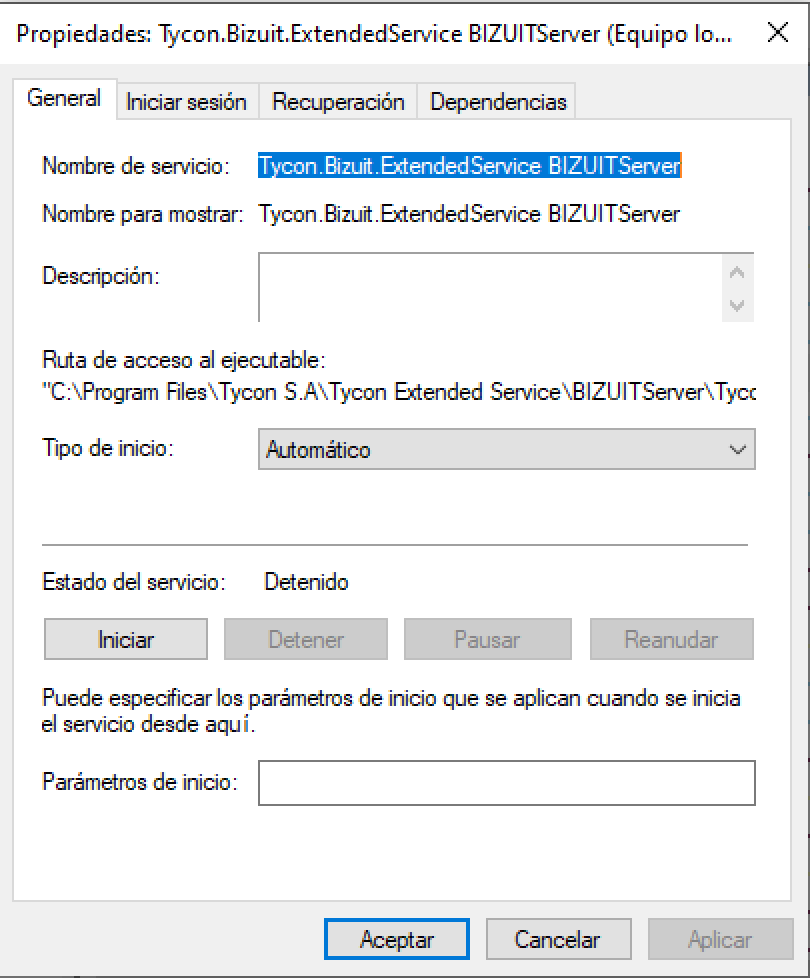

Una vez comprobada la correcta instalación de la plataforma, se debe iniciar el servicio de Windows provisto por la plataforma BIZUIT para el manejo de sus servicios extendidos.
- Dirijase a Panel de Control->Herramientas Administrativas->Servicios y ubique el servicio llamado “Tycon.Bizuit.Extended Service [NOMBREDIRECTORIOVIRTUALDEBIZUITSERVER]”:

- Si su estado es distinto a "Iniciado", haga doble clic sobre el mismo y en la ventana siguiente presione el botón “Iniciar”:

- En caso de recibir un mensaje de Windows indicando que el servicio no pudo iniciarse, consulte el Visor de Eventos de Windows.
Anterior / Siguiente